Code
library(tidyverse)
data <- read_csv("https://raw.githubusercontent.com/rfordatascience/tidytuesday/master/data/2020/2020-02-11/hotels.csv")February 3, 2026
This page is the original R source, re-executed on every site build — not a static transcription. Data loads live from the public TidyTuesday hotel bookings dataset (City Hotel & Resort Hotel bookings, Portugal, 2015-2017).
Which factors actually drive booking cancellations, and how does customer behaviour — lead time, stay length, pricing sensitivity — differ across a hotel’s key source markets? The goal: turn that into concrete, country-level marketing recommendations rather than a generic dashboard.
hotel_names = distinct(data, hotel)
city_hotel = filter(data, hotel == "City Hotel")
resort_hotel = filter(data, hotel == "Resort Hotel")
cancel_rate_city = mean(city_hotel$is_canceled, na.rm = T)
cancel_rate_res = mean(resort_hotel$is_canceled, na.rm = T)
print(paste("City Hotel cancelation rate:", round(cancel_rate_city, 3)))[1] "City Hotel cancelation rate: 0.417"[1] "Resort Hotel cancelation rate: 0.278"The City Hotel has a cancellation rate of 41.7%, compared to 27.8% for the Resort Hotel, meaning that City Hotel is 1.5 times more likely to have its booking cancelled. This difference could reflect the possibility that the two hotels attract different customer segments. City Hotel bookings may be more exposed to short-notice changes, for example due to a higher share of business or short-stay travel, whereas Resort Hotel bookings may be more leisure-oriented and planned further in advance.
[1] 0.2931234# A tibble: 2 × 2
is_canceled lead_by_cancelation
<dbl> <dbl>
1 0 80.0
2 1 145. 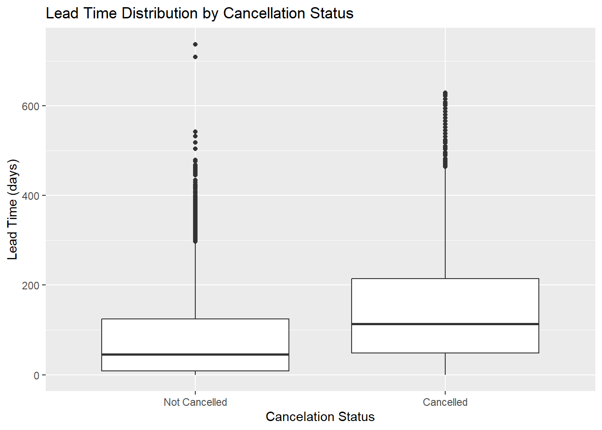
The correlation coefficient between lead time and cancellation status is 0.293, indicating moderate linear association between the two variables. This therefore suggests that longer lead times tend to be associated with a higher probability of cancellation. This relationship is also visible in the summary statistics and the boxplot. Cancelled bookings have a substantially higher mean lead time than non-cancelled bookings, and the entire distribution of lead times for cancelled bookings is shifted toward higher values. Overall, the evidence suggests that longer lead times are associated with increased cancellation likelihood. This relationship makes intuitive sense, as customers who book far in advance have more time for their circumstances to change, increasing chance of cancellation.
# A tibble: 2 × 2
has_special_req cancel_rate
<dbl> <dbl>
1 0 0.477
2 1 0.217data %>% group_by(total_of_special_requests) %>%
summarise(cancel_rate = mean(is_canceled, na.rm = T)) %>%
ggplot(aes(x = total_of_special_requests, y = cancel_rate, fill = total_of_special_requests)) +
geom_col() +
labs(title = "Cancelation Rate by Number of Special Requests",
x = "Number of Special Requests",
y = "Cancelation Rate")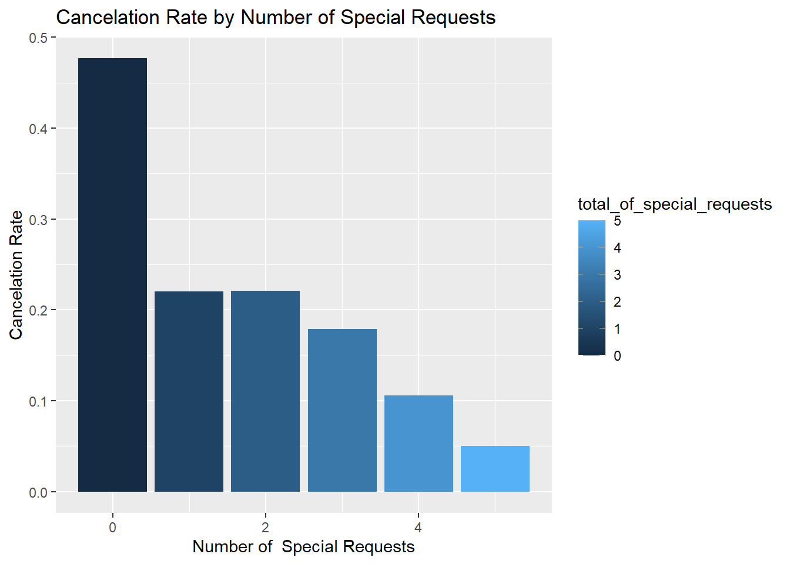
Bookings with at least one special request have a cancellation rate of 21.7%, compared to 47.7% for bookings without any special requests. This indicates that bookings involving special requests are less likely to be cancelled. The visualisation further shows a downward trend in cancellation rates as the number of special requests increases. This pattern suggests that customers who make special requests are likely to demonstrate higher commitment to their bookings, since they have invested additional effort in tailoring their stay.
# A tibble: 2 × 2
changed_booking cancel_rate
<dbl> <dbl>
1 0 0.409
2 1 0.157data %>% group_by(booking_changes) %>%
summarise(cancel_rate = mean(is_canceled, na.rm = T), count = n()) %>%
ggplot(aes(x = booking_changes, y = cancel_rate, fill = booking_changes)) +
geom_col() +
geom_text(aes(label = count), angle = 90, vjust = 0.5, hjust = -0.2, size = 3) +
labs(title = "Cancelation Rate by Booking Changes",
x = "Number of Booking Changes",
y = "Cancelation Rate")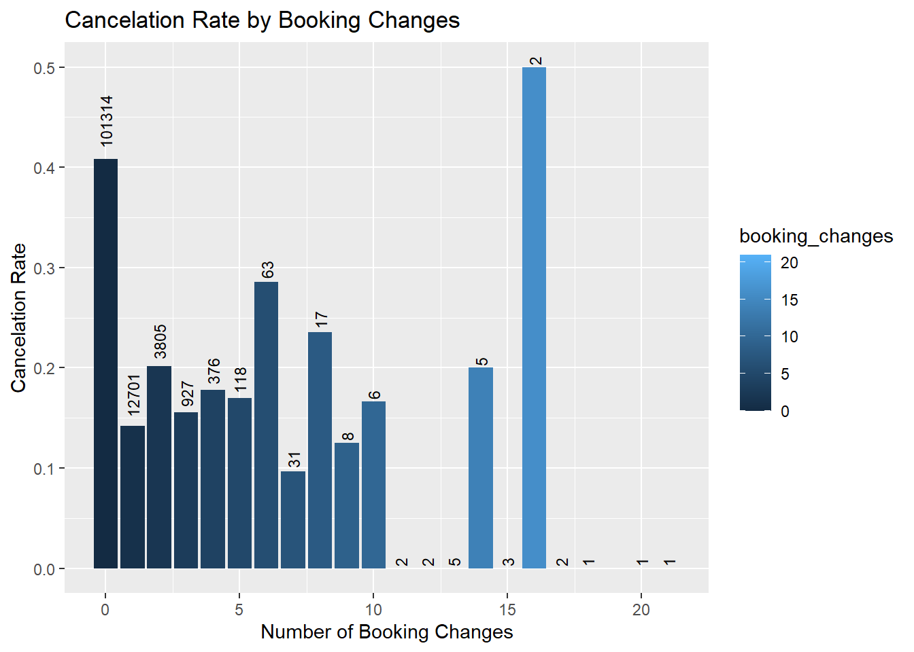
Customers who modify their bookings are less likely to cancel. Bookings with at least one change have a cancellation rate of only 15.7%, compared to 40.9% for bookings with no modifications. The visualization reveals that cancellation rates generally decrease as the number of booking changes increases, particularly for bookings with 1-10 modifications. It should be noted that there is some variability in cancellation rates at very high numbers of booking changes, but this likely reflects the small sample sizes for these booking categories. Overall, the observed pattern has a clear interpretation: customers who take time to modify their bookings demonstrate active engagement and commitment to their travel plans, lowering the likelihood of cancellation.
library(glue)
data = data %>% mutate(arrival_month = ym(glue("{arrival_date_year} {arrival_date_month}")))%>%
relocate(arrival_month)
data %>% group_by(arrival_month, hotel) %>%
summarise(monthly_adr = mean(adr, na.rm = T)) %>%
ggplot(aes(x = arrival_month, y = monthly_adr)) +
facet_wrap(~hotel, ncol = 1) +
geom_line() +
labs(title = "Monthly Average Daily Rate",
x = "Month",
y = "Average ADR ($)")`summarise()` has grouped output by 'arrival_month'. You can override using the
`.groups` argument.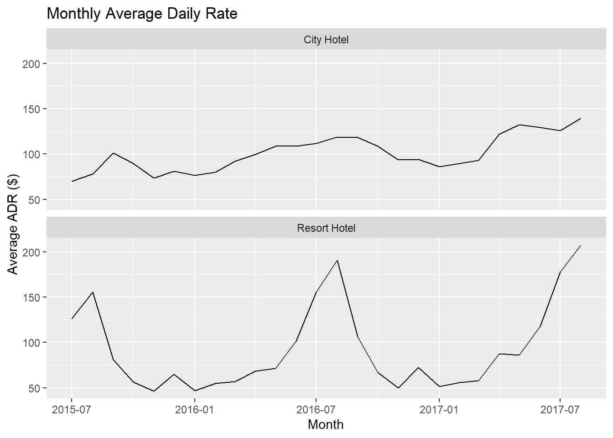
For both hotels, average daily rates (ADRs) tend to peak during the summer months, particularly in August, and reach their lowest levels during the winter months, notably in November and January. However, the magnitude of seasonal variation differs substantially between the hotels. City Hotel exhibits relatively stable ADRs throughout the year, suggesting more consistent pricing and demand across seasons. In contrast, Resort Hotel shows pronounced seasonal fluctuations, with sharp increases leading into the summer period and steep declines thereafter, indicating stronger seasonality in leisure-driven demand for the Resort Hotel.
Another key observation is that the City Hotel ADR has been steadily increasing through the sample, reflected in consistent year-on-year ADR increases. This could be related to strengthening demand, improved pricing power, or changes in the hotel’s positioning over time.
library(patchwork)
data = data %>% mutate(nights_stayed = stays_in_week_nights + stays_in_weekend_nights)
p1 = data %>% group_by(nights_stayed) %>%
summarise(avg_adr = mean(adr, na.rm = T)) %>%
ggplot(aes(x = nights_stayed, y = avg_adr)) +
geom_col(width = 0.7) +
labs(title = "Average ADR by Stay Length",
x = "Nights Stayed",
y = "Average ADR") +
theme_minimal()
p2 = data %>% filter(nights_stayed <= 30) %>%
group_by(nights_stayed) %>%
ggplot(aes(x = factor(nights_stayed), y = adr)) +
geom_boxplot() +
scale_x_discrete(breaks = seq(0, 30, by = 5)) +
scale_y_continuous(limits = c(0, 200)) +
labs(title = "ADR Distribution by Stay Length",
x = "Nights Stayed",
y = "ADR") +
theme_minimal()
p1 + p2Warning: Removed 4930 rows containing non-finite outside the scale range
(`stat_boxplot()`).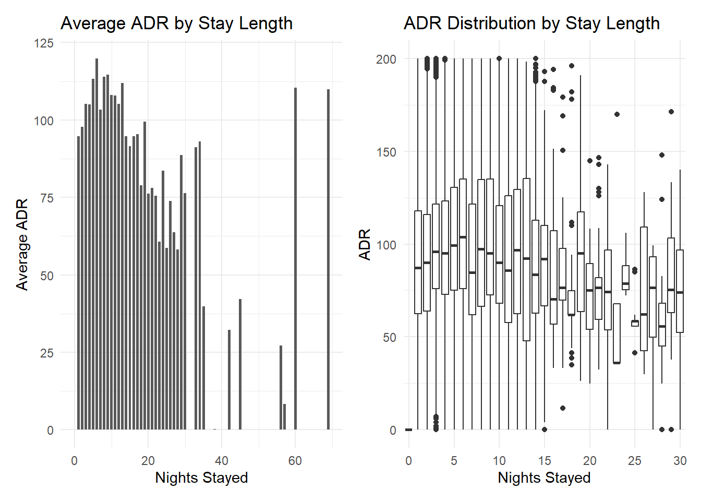
The relationship between length of stay and ADR appears to be non-linear. As stay length increases from one night to approximately seven nights, average daily rates tend to rise. Beyond this point, further increases in stay length are associated with declining ADRs. This pattern is consistent with common pricing strategies where short stays capture higher per-night willingness to pay, while longer stays are incentivised through discounted average daily rates. Overall, the analysis suggests that longer stays are associated with lower per-night prices, particularly for stays exceeding one week.
data %>% filter(is_canceled == 0, nights_stayed > 0) %>%
mutate(booking_revenue = adr * nights_stayed) %>%
group_by(arrival_month, hotel) %>%
summarise(total_revenue = sum(booking_revenue)) %>%
ggplot(aes(x = arrival_month, y = total_revenue)) +
geom_line() +
facet_wrap(~ hotel, ncol = 1) +
labs(title = "Total Monthly Revenues by Hotel",
x = "Month",
y = "Total Revenue")`summarise()` has grouped output by 'arrival_month'. You can override using the
`.groups` argument.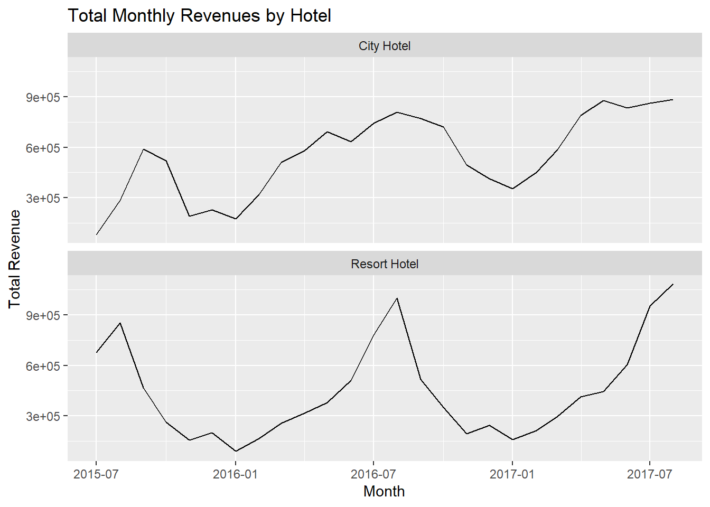
Total monthly revenues for both hotels exhibit strong seasonal patterns. Revenues peak during the summer months, with August being the highest-revenue month on average across the sample period for both hotels. Conversely, revenues are lowest around January, indicating weaker demand during the winter season.
However, the revenue profiles differ notably between the two hotels. Resort Hotel’s revenues are substantially more volatile across the year, with much sharper increases in the lead-up to summer and more pronounced declines in autumn. In contrast, City Hotel revenues are more evenly distributed across months, suggesting lower sensitivity to seasonal demand fluctuations.
One notable anomaly in the data is that in 2015, City Hotel had the highest revenue in September instead of August. This could have been caused by some temporary factors early in the sample period, but the underlying cause cannot be identified from the available data.
data %>% group_by(country) %>%
summarise(n_bookings = n(), avg_cancel_rate = mean(is_canceled, na.rm = T)) %>%
arrange(desc(n_bookings)) %>%
slice_head(n = 5) %>%
ggplot(aes(x = country, y = n_bookings, fill = avg_cancel_rate)) +
geom_col() +
geom_text(aes(label = scales::percent(avg_cancel_rate, accuracy = 0.1)), vjust = -0.5, size = 3.5) +
labs(title = "Countries with the Highest Number of Bookings by Cancelation Rates",
x = "Country",
y = "Number of Bookings")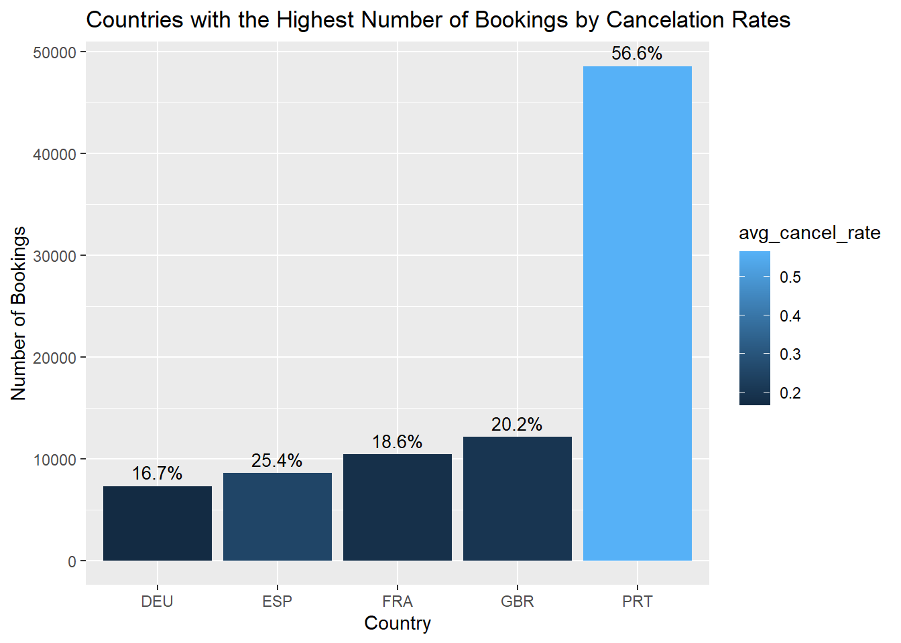
The five countries with the highest number of bookings are Portugal, Great Britain, France, Spain, and Germany, with Portugal accounting for a substantially larger share of bookings than the other countries. However, there are also large differences in cancellation rates: Portugal has more than 55% of its bookings cancelled, followed by Spain at approximately 25%. This means the number of realised stays from Portugal is closer to the number of realised stays from countries such as Great Britain or France, but still dominates these countries.
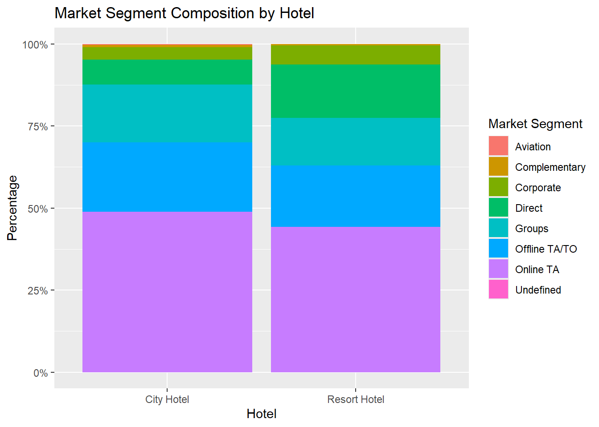
The dominant market segment for both hotels is “Online TA” with other notable segments for both hotels being “Offline TA/TO”, “Groups”, and “Corporate”. This pattern is consistent with the growing preference for online booking platforms such as Booking.com, Expedia, or Hotels.com during the sample period, which already dominated traditional offline travel agents at that time, due to their superior convenience and flexibility. “Offline TA/TO” remains a secondary but non-negligible segment for both hotels, indicating that traditional travel agents still play a role in booking activity during the sample period. Direct bookings and corporate segments represent smaller proportions of total demand, which is consistent with the limited scale of business-related and direct-channel travel relative to leisure-oriented bookings.
The following analysis examines differences in booking behaviour across customer geographies with the objective of identifying insights that could inform more targeted, country-specific marketing strategies. In particular, the analysis focuses on how booking timing, length of stay, pricing, and selected guest characteristics vary across countries, and how these dimensions relate to revenue-relevant outcomes. To ensure practical relevance, the analysis is restricted to countries that already represent a substantial share of bookings for each hotel. Rather than exploring expansion into new markets, the focus is on understanding behavioural differences within existing geographic segments, where targeted marketing interventions are more immediately actionable. The central research question guiding this analysis is: how do booking behaviour and pricing characteristics differ across key customer geographies, and how can these differences inform the timing, positioning, and focus of hotel marketing efforts?
| City Hotel - Top Countries | ||
| country | n_bookings | perc_of_total |
|---|---|---|
| PRT | 30,960 | 39.0% |
| FRA | 8,804 | 11.1% |
| DEU | 6,084 | 7.7% |
| GBR | 5,315 | 6.7% |
| ESP | 4,611 | 5.8% |
| ITA | 3,307 | 4.2% |
| BEL | 1,894 | 2.4% |
| Resort Hotel - Top Countries | ||
| country | n_bookings | perc_of_total |
|---|---|---|
| PRT | 17,630 | 44.0% |
| GBR | 6,814 | 17.0% |
| ESP | 3,957 | 9.9% |
| IRL | 2,166 | 5.4% |
| FRA | 1,611 | 4.0% |
| DEU | 1,203 | 3.0% |
| CN | 710 | 1.8% |
While the earlier country breakdown examined booking volumes, this section considers booking proportions by hotel to assess source-market composition. Bookings for both hotels are concentrated in a small number of countries, with Portugal accounting for the largest share in each case, and the overall geographic composition being broadly similar across hotels. Accordingly, the analysis focuses on the five largest source markets for each hotel: Portugal, France, Germany, Great Britain, and Spain for City Hotel, and Portugal, Great Britain, Spain, Ireland, and France for Resort Hotel. This ensures that subsequent insights are derived from commercially meaningful markets.
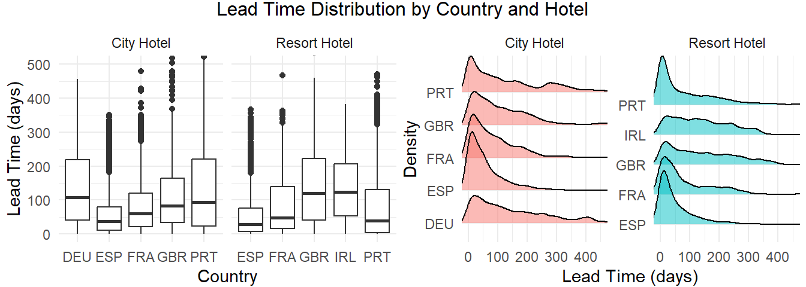
Lead times vary across countries for both hotels, although most bookings occur between approximately 20 and 90 days before arrival and have a long tail of bookings made further in advance. For Resort Hotel, Spanish and Portuguese customers tend to book closer to arrival, while customers from Great Britain and Ireland exhibit longer lead times. For City Hotel, cross-country differences are less pronounced, although Spain consistently shows shorter lead times than other major markets. From a marketing perspective, these patterns suggest that promotional timing may benefit from geographic differentiation. For Resort Hotel, campaigns targeting British and Irish customers may need to be launched earlier in the booking cycle, while promotions aimed at Spanish and Portuguese customers can be scheduled closer to the peak travel period. For City Hotel, more uniform campaign timing across countries appears appropriate, with limited adjustment for Spain’s shorter lead times.
Another relevant dimension for marketing design is length of stay, which is examined next to assess how typical stay duration preferences vary across countries and hotels, given its implications for offer design and pricing.
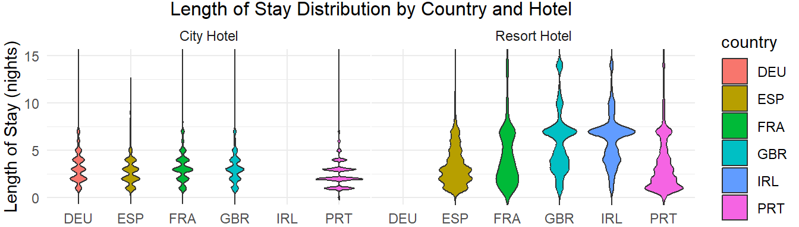
For City Hotel, stays are generally short across all major source markets, with the majority of bookings lasting five nights or fewer and limited variation across countries. In contrast, Resort Hotel exhibits substantially greater dispersion in stay length. Spanish and Portuguese customers tend to book shorter stays, typically under one week, while customers from Great Britain and Ireland are more likely to book stays of one week or longer. Thus, City Hotel promotions may be more effectively oriented toward short stays and weekend trips across markets, while Resort Hotel may benefit from a broader mix of stay-duration offers, with greater emphasis on longer stays when targeting British and Irish customers.
The next key consideration is price positioning, in particular identifying which markets are more suited to higher-end, premium offers and which may respond better to more affordable stay packages. A closely related dimension is the degree of stay customisation, which is also examined in the following analysis.
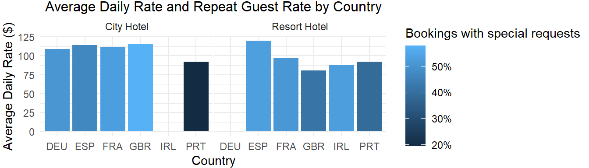
For both hotels, geographic segments with a higher share of bookings that include special requests also tend to exhibit higher average daily rates, indicating an association between willingness to pay and demand for more customised stays. This implies that emphasising flexibility and customisation may be more effective when targeting higher-spending customer segments. For City Hotel, Portuguese guests exhibit the lowest average spend per night among major source markets, suggesting they may be more responsive to value-oriented offers. For Resort Hotel, Spanish guests display the highest average prices and may represent more suitable targets for premium offerings, relative to Portugal and Great Britain, where demand appears more price-sensitive.
Having examined cross-country differences in lead time, length of stay, and average daily rate, it is useful to consider how these dimensions interact and how this may inform marketing timing and positioning across markets.
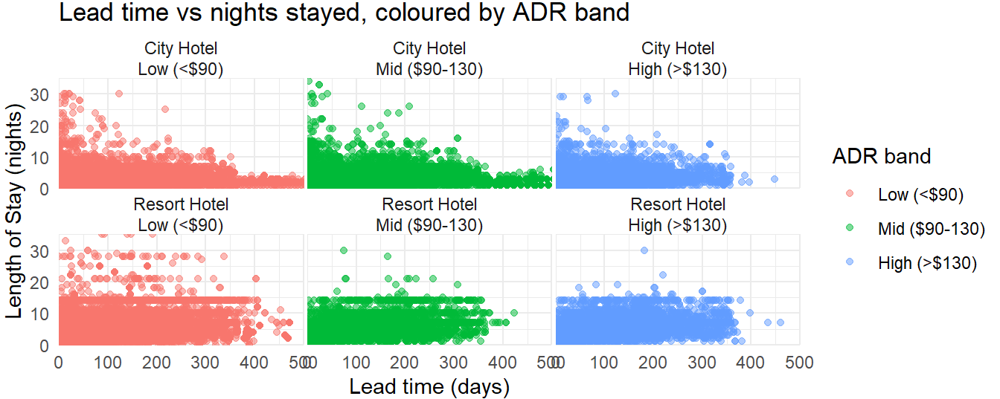
When examined jointly, longer stays tend to be associated with lower average daily rates, suggesting that price positioning reflects not only willingness to pay but also stay duration, particularly for extended stays that benefit from lower per-night pricing. Lead time also varies systematically with price positioning. For both hotels, higher-priced stays are less commonly booked far in advance, while bookings made well ahead of arrival are more concentrated in lower to mid-range ADRs. This is especially pronounced for City Hotel, where higher-priced stays are rarely booked more than a year in advance. This indicates that premium offerings may be more effectively promoted through shorter-horizon campaigns rather than early-bird promotions. Conversely, early-bird promotions may be better suited for value-oriented offers. Finally, effective marketing design also requires consideration of guest characteristics beyond price sensitivity and stay duration. One such dimension that captures several less directly observable preferences is whether bookings include children.
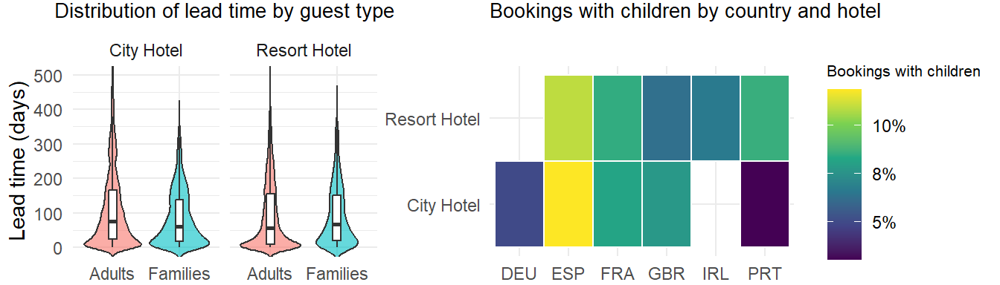
Across both hotels, bookings that include children tend to be made slightly further in advance than adult-only bookings, although the differences are relatively small. This suggests the timing of summer promotion campaigns does not need to differ across family and adult-only segments. The heatmap indicates that Resort Hotel attracts a higher share of family bookings across key geographies, while City Hotel demand remains dominated by adult-only stays. In addition, Spanish customers exhibit a relatively high incidence of family travel for both hotels. This suggests that family-oriented offers and amenities may be particularly relevant when targeting the Spanish market, especially for Resort Hotel.
To conclude, booking behaviour differs across countries primarily through systematic differences in booking timing, stay duration, and price positioning. Higher-priced and more customised stays tend to be booked closer to arrival, while earlier bookings are more strongly associated with longer stays and lower average daily rates. Effective geographic targeting should align both the timing and positioning of marketing offers with observed country-specific booking patterns, rather than relying on uniform campaigns across markets.
---
title: "Hotel Booking Cancellation & Revenue Analysis"
description: "Identifying what drives cancellations and how booking behaviour, pricing, and stay patterns differ by country, to inform country-specific hotel marketing strategy."
date: 2026-02-03
categories: [Report, Code, Academic, R, tidyverse, Data Visualisation]
image: images/hotel-analysis-thumb.png # TODO: add a screenshot/chart export, ~800x450px
---
*This page is the original R source, re-executed on every site build — not a
static transcription. Data loads live from the public
[TidyTuesday hotel bookings dataset](https://github.com/rfordatascience/tidytuesday/blob/main/data/2020/2020-02-11/readme.md)
(City Hotel & Resort Hotel bookings, Portugal, 2015-2017).*
## The problem
Which factors actually drive booking cancellations, and how does customer
behaviour — lead time, stay length, pricing sensitivity — differ across a
hotel's key source markets? The goal: turn that into concrete, country-level
marketing recommendations rather than a generic dashboard.
```{r}
#| message: false
library(tidyverse)
data <- read_csv("https://raw.githubusercontent.com/rfordatascience/tidytuesday/master/data/2020/2020-02-11/hotels.csv")
```
## Cancellation drivers
### Cancellation rate by hotel
```{r}
hotel_names = distinct(data, hotel)
city_hotel = filter(data, hotel == "City Hotel")
resort_hotel = filter(data, hotel == "Resort Hotel")
cancel_rate_city = mean(city_hotel$is_canceled, na.rm = T)
cancel_rate_res = mean(resort_hotel$is_canceled, na.rm = T)
print(paste("City Hotel cancelation rate:", round(cancel_rate_city, 3)))
print(paste("Resort Hotel cancelation rate:", round(cancel_rate_res, 3)))
```
The City Hotel has a cancellation rate of 41.7%, compared to 27.8% for the Resort Hotel, meaning that City Hotel is 1.5 times more likely to have its booking cancelled.
This difference could reflect the possibility that the two hotels attract different customer segments. City Hotel bookings may be more exposed to short-notice changes, for example due to a higher share of business or short-stay travel, whereas Resort Hotel bookings may be more leisure-oriented and planned further in advance.
### Lead time vs. cancellation
```{r}
cor(data$lead_time, data$is_canceled)
data %>% group_by(is_canceled) %>%
summarise(lead_by_cancelation = mean(lead_time))
```
```{r}
ggplot(data, aes(x = factor(is_canceled, labels = c("Not Cancelled", "Cancelled")), y = lead_time)) +
geom_boxplot() +
labs(title = "Lead Time Distribution by Cancellation Status",
x = "Cancelation Status",
y = "Lead Time (days)")
```
The correlation coefficient between lead time and cancellation status is 0.293, indicating moderate linear association between the two variables. This therefore suggests that longer lead times tend to be associated with a higher probability of cancellation.
This relationship is also visible in the summary statistics and the boxplot. Cancelled bookings have a substantially higher mean lead time than non-cancelled bookings, and the entire distribution of lead times for cancelled bookings is shifted toward higher values.
Overall, the evidence suggests that longer lead times are associated with increased cancellation likelihood. This relationship makes intuitive sense, as customers who book far in advance have more time for their circumstances to change, increasing chance of cancellation.
### Special requests vs. cancellation
```{r}
data = data %>% mutate(has_special_req = case_when(total_of_special_requests > 0 ~ 1, TRUE ~ 0))
data %>% group_by(has_special_req) %>%
summarise(cancel_rate = mean(is_canceled, na.rm = T))
```
```{r}
data %>% group_by(total_of_special_requests) %>%
summarise(cancel_rate = mean(is_canceled, na.rm = T)) %>%
ggplot(aes(x = total_of_special_requests, y = cancel_rate, fill = total_of_special_requests)) +
geom_col() +
labs(title = "Cancelation Rate by Number of Special Requests",
x = "Number of Special Requests",
y = "Cancelation Rate")
```
Bookings with at least one special request have a cancellation rate of 21.7%, compared to 47.7% for bookings without any special requests. This indicates that bookings involving special requests are less likely to be cancelled.
The visualisation further shows a downward trend in cancellation rates as the number of special requests increases. This pattern suggests that customers who make special requests are likely to demonstrate higher commitment to their bookings, since they have invested additional effort in tailoring their stay.
### Booking changes vs. cancellation
```{r}
data = data %>% mutate(changed_booking = case_when(booking_changes > 0 ~ 1, TRUE ~ 0))
data %>% group_by(changed_booking) %>%
summarise(cancel_rate = mean(is_canceled, na.rm = T))
```
```{r}
data %>% group_by(booking_changes) %>%
summarise(cancel_rate = mean(is_canceled, na.rm = T), count = n()) %>%
ggplot(aes(x = booking_changes, y = cancel_rate, fill = booking_changes)) +
geom_col() +
geom_text(aes(label = count), angle = 90, vjust = 0.5, hjust = -0.2, size = 3) +
labs(title = "Cancelation Rate by Booking Changes",
x = "Number of Booking Changes",
y = "Cancelation Rate")
```
Customers who modify their bookings are less likely to cancel. Bookings with at least one change have a cancellation rate of only 15.7%, compared to 40.9% for bookings with no modifications.
The visualization reveals that cancellation rates generally decrease as the number of booking changes increases, particularly for bookings with 1-10 modifications. It should be noted that there is some variability in cancellation rates at very high numbers of booking changes, but this likely reflects the small sample sizes for these booking categories.
Overall, the observed pattern has a clear interpretation: customers who take time to modify their bookings demonstrate active engagement and commitment to their travel plans, lowering the likelihood of cancellation.
## Pricing, revenue & seasonality
### Monthly average daily rate
```{r}
library(glue)
data = data %>% mutate(arrival_month = ym(glue("{arrival_date_year} {arrival_date_month}")))%>%
relocate(arrival_month)
data %>% group_by(arrival_month, hotel) %>%
summarise(monthly_adr = mean(adr, na.rm = T)) %>%
ggplot(aes(x = arrival_month, y = monthly_adr)) +
facet_wrap(~hotel, ncol = 1) +
geom_line() +
labs(title = "Monthly Average Daily Rate",
x = "Month",
y = "Average ADR ($)")
```
For both hotels, average daily rates (ADRs) tend to peak during the summer months, particularly in August, and reach their lowest levels during the winter months, notably in November and January.
However, the magnitude of seasonal variation differs substantially between the hotels. City Hotel exhibits relatively stable ADRs throughout the year, suggesting more consistent pricing and demand across seasons. In contrast, Resort Hotel shows pronounced seasonal fluctuations, with sharp increases leading into the summer period and steep declines thereafter, indicating stronger seasonality in leisure-driven demand for the Resort Hotel.
Another key observation is that the City Hotel ADR has been steadily increasing through the sample, reflected in consistent year-on-year ADR increases. This could be related to strengthening demand, improved pricing power, or changes in the hotel's positioning over time.
### ADR vs. length of stay
```{r}
library(patchwork)
data = data %>% mutate(nights_stayed = stays_in_week_nights + stays_in_weekend_nights)
p1 = data %>% group_by(nights_stayed) %>%
summarise(avg_adr = mean(adr, na.rm = T)) %>%
ggplot(aes(x = nights_stayed, y = avg_adr)) +
geom_col(width = 0.7) +
labs(title = "Average ADR by Stay Length",
x = "Nights Stayed",
y = "Average ADR") +
theme_minimal()
p2 = data %>% filter(nights_stayed <= 30) %>%
group_by(nights_stayed) %>%
ggplot(aes(x = factor(nights_stayed), y = adr)) +
geom_boxplot() +
scale_x_discrete(breaks = seq(0, 30, by = 5)) +
scale_y_continuous(limits = c(0, 200)) +
labs(title = "ADR Distribution by Stay Length",
x = "Nights Stayed",
y = "ADR") +
theme_minimal()
p1 + p2
```
The relationship between length of stay and ADR appears to be non-linear. As stay length increases from one night to approximately seven nights, average daily rates tend to rise. Beyond this point, further increases in stay length are associated with declining ADRs.
This pattern is consistent with common pricing strategies where short stays capture higher per-night willingness to pay, while longer stays are incentivised through discounted average daily rates.
Overall, the analysis suggests that longer stays are associated with lower per-night prices, particularly for stays exceeding one week.
### Total monthly revenue
```{r}
data %>% filter(is_canceled == 0, nights_stayed > 0) %>%
mutate(booking_revenue = adr * nights_stayed) %>%
group_by(arrival_month, hotel) %>%
summarise(total_revenue = sum(booking_revenue)) %>%
ggplot(aes(x = arrival_month, y = total_revenue)) +
geom_line() +
facet_wrap(~ hotel, ncol = 1) +
labs(title = "Total Monthly Revenues by Hotel",
x = "Month",
y = "Total Revenue")
```
Total monthly revenues for both hotels exhibit strong seasonal patterns. Revenues peak during the summer months, with August being the highest-revenue month on average across the sample period for both hotels. Conversely, revenues are lowest around January, indicating weaker demand during the winter season.
However, the revenue profiles differ notably between the two hotels. Resort Hotel's revenues are substantially more volatile across the year, with much sharper increases in the lead-up to summer and more pronounced declines in autumn. In contrast, City Hotel revenues are more evenly distributed across months, suggesting lower sensitivity to seasonal demand fluctuations.
One notable anomaly in the data is that in 2015, City Hotel had the highest revenue in September instead of August. This could have been caused by some temporary factors early in the sample period, but the underlying cause cannot be identified from the available data.
## Booking geography
### Top source markets
```{r}
data %>% group_by(country) %>%
summarise(n_bookings = n(), avg_cancel_rate = mean(is_canceled, na.rm = T)) %>%
arrange(desc(n_bookings)) %>%
slice_head(n = 5) %>%
ggplot(aes(x = country, y = n_bookings, fill = avg_cancel_rate)) +
geom_col() +
geom_text(aes(label = scales::percent(avg_cancel_rate, accuracy = 0.1)), vjust = -0.5, size = 3.5) +
labs(title = "Countries with the Highest Number of Bookings by Cancelation Rates",
x = "Country",
y = "Number of Bookings")
```
The five countries with the highest number of bookings are Portugal, Great Britain, France, Spain, and Germany, with Portugal accounting for a substantially larger share of bookings than the other countries.
However, there are also large differences in cancellation rates: Portugal has more than 55% of its bookings cancelled, followed by Spain at approximately 25%. This means the number of realised stays from Portugal is closer to the number of realised stays from countries such as Great Britain or France, but still dominates these countries.
### Market segment composition
```{r}
ggplot(data, aes(x = hotel, fill = market_segment)) +
geom_bar(position = "fill") +
scale_y_continuous(labels = scales::percent) +
labs(title = "Market Segment Composition by Hotel",
x = "Hotel",
y = "Percentage",
fill = "Market Segment")
```
The dominant market segment for both hotels is "Online TA" with other notable segments for both hotels being "Offline TA/TO", "Groups", and "Corporate".
This pattern is consistent with the growing preference for online booking platforms such as Booking.com, Expedia, or Hotels.com during the sample period, which already dominated traditional offline travel agents at that time, due to their superior convenience and flexibility.
"Offline TA/TO" remains a secondary but non-negligible segment for both hotels, indicating that traditional travel agents still play a role in booking activity during the sample period. Direct bookings and corporate segments represent smaller proportions of total demand, which is consistent with the limited scale of business-related and direct-channel travel relative to leisure-oriented bookings.
## Country-level marketing strategy
The following analysis examines differences in booking behaviour across customer geographies with the objective of identifying insights that could inform more targeted, country-specific marketing strategies. In particular, the analysis focuses on how booking timing, length of stay, pricing, and selected guest characteristics vary across countries, and how these dimensions relate to revenue-relevant outcomes.
To ensure practical relevance, the analysis is restricted to countries that already represent a substantial share of bookings for each hotel. Rather than exploring expansion into new markets, the focus is on understanding behavioural differences within existing geographic segments, where targeted marketing interventions are more immediately actionable.
The central research question guiding this analysis is: how do booking behaviour and pricing characteristics differ across key customer geographies, and how can these differences inform the timing, positioning, and focus of hotel marketing efforts?
```{r}
#| echo: false
library(gt)
city_table <- data %>%
filter(hotel == "City Hotel") %>%
count(country, name = "n_bookings") %>%
mutate(perc_of_total = n_bookings / sum(n_bookings)) %>%
arrange(desc(n_bookings)) %>%
slice_head(n = 7)
resort_table <- data %>%
filter(hotel == "Resort Hotel") %>%
count(country, name = "n_bookings") %>%
mutate(perc_of_total = n_bookings / sum(n_bookings)) %>%
arrange(desc(n_bookings)) %>%
slice_head(n = 7)
```
::: {.columns}
::: {.column width="50%"}
```{r}
#| echo: false
#| out-width: "70%"
city_table %>%
gt() %>%
tab_header(title = "City Hotel - Top Countries") %>%
fmt_number(n_bookings, decimals = 0, use_seps = TRUE) %>%
fmt_percent(perc_of_total, decimals = 1) %>%
tab_options(
table.font.size = px(10),
heading.title.font.size = px(12),
column_labels.font.size = px(10),
table_body.hlines.width = px(0),
table_body.vlines.width = px(0))
```
:::
::: {.column width="50%"}
```{r}
#| echo: false
#| out-width: "70%"
resort_table %>%
gt() %>%
tab_header(title = "Resort Hotel - Top Countries") %>%
fmt_number(n_bookings, decimals = 0, use_seps = TRUE) %>%
fmt_percent(perc_of_total, decimals = 1) %>%
tab_options(
table.font.size = px(10),
heading.title.font.size = px(12),
column_labels.font.size = px(10),
table_body.hlines.width = px(0),
table_body.vlines.width = px(0))
```
:::
:::
While the earlier country breakdown examined booking volumes, this section considers booking proportions by hotel to assess source-market composition.
Bookings for both hotels are concentrated in a small number of countries, with Portugal accounting for the largest share in each case, and the overall geographic composition being broadly similar across hotels.
Accordingly, the analysis focuses on the five largest source markets for each hotel: Portugal, France, Germany, Great Britain, and Spain for City Hotel, and Portugal, Great Britain, Spain, Ireland, and France for Resort Hotel. This ensures that subsequent insights are derived from commercially meaningful markets.
```{r}
#| echo: false
#| message: false
#| fig-width: 7
#| fig-height: 2.5
#| out-width: "100%"
library(ggridges)
library(patchwork)
g1 = data %>% filter(
(hotel == "City Hotel" & country %in% c("PRT", "FRA", "DEU", "GBR", "ESP")) |
(hotel == "Resort Hotel" & country %in% c("PRT", "GBR", "ESP", "IRL", "FRA"))) %>%
ggplot(aes(x = country, y = lead_time)) +
geom_boxplot() +
facet_wrap(~hotel, scales = "free_x") +
coord_cartesian(ylim = c(0, 500)) +
labs(x = "Country",
y = "Lead Time (days)") +
theme_minimal()
g2 = data %>% filter(
(hotel == "City Hotel" & country %in% c("PRT", "FRA", "DEU", "GBR", "ESP")) |
(hotel == "Resort Hotel" & country %in% c("PRT", "GBR", "ESP", "IRL", "FRA"))) %>%
ggplot(aes(x = lead_time, y = country, fill = hotel)) +
geom_density_ridges(alpha = 0.5) +
facet_wrap(~hotel, scales = "free_y") +
coord_cartesian(xlim = c(0, 450)) +
labs(x = "Lead Time (days)",
y = "Density") +
theme_minimal() +
theme(legend.position = "none")
g1 + g2 +
plot_annotation(title = "Lead Time Distribution by Country and Hotel",
theme = theme(plot.title = element_text(size = 12, hjust = 0.5))) &
theme(plot.margin = margin(0.5, 2, 0.5, 2))
```
Lead times vary across countries for both hotels, although most bookings occur between approximately 20 and 90 days before arrival and have a long tail of bookings made further in advance. For Resort Hotel, Spanish and Portuguese customers tend to book closer to arrival, while customers from Great Britain and Ireland exhibit longer lead times. For City Hotel, cross-country differences are less pronounced, although Spain consistently shows shorter lead times than other major markets. From a marketing perspective, these patterns suggest that promotional timing may benefit from geographic differentiation. For Resort Hotel, campaigns targeting British and Irish customers may need to be launched earlier in the booking cycle, while promotions aimed at Spanish and Portuguese customers can be scheduled closer to the peak travel period. For City Hotel, more uniform campaign timing across countries appears appropriate, with limited adjustment for Spain's shorter lead times.
Another relevant dimension for marketing design is length of stay, which is examined next to assess how typical stay duration preferences vary across countries and hotels, given its implications for offer design and pricing.
```{r}
#| echo: false
#| fig-width: 7
#| fig-height: 2
#| out-width: "100%"
data %>% filter(
(hotel == "City Hotel" & country %in% c("PRT", "FRA", "DEU", "GBR", "ESP")) |
(hotel == "Resort Hotel" & country %in% c("PRT", "GBR", "ESP", "IRL", "FRA"))) %>%
ggplot(aes(x = country, y = nights_stayed, fill = country)) +
geom_violin(trim = F) +
facet_wrap(~hotel) +
coord_cartesian(ylim = c(0, 15)) +
labs(title = "Length of Stay Distribution by Country and Hotel",
x = NULL,
y = "Length of Stay (nights)") +
theme_minimal() +
theme(plot.margin = margin(0.5, 2, 0.5, 2),
panel.spacing = unit(1, "pt"),
plot.title = element_text(size = 12, hjust = 0.5, margin = margin(b = 2)))
```
For City Hotel, stays are generally short across all major source markets, with the majority of bookings lasting five nights or fewer and limited variation across countries. In contrast, Resort Hotel exhibits substantially greater dispersion in stay length. Spanish and Portuguese customers tend to book shorter stays, typically under one week, while customers from Great Britain and Ireland are more likely to book stays of one week or longer. Thus, City Hotel promotions may be more effectively oriented toward short stays and weekend trips across markets, while Resort Hotel may benefit from a broader mix of stay-duration offers, with greater emphasis on longer stays when targeting British and Irish customers.
The next key consideration is price positioning, in particular identifying which markets are more suited to higher-end, premium offers and which may respond better to more affordable stay packages. A closely related dimension is the degree of stay customisation, which is also examined in the following analysis.
```{r}
#| echo: false
#| fig-width: 7
#| fig-height: 2
#| out-width: "100%"
data %>% filter(
(hotel == "City Hotel" & country %in% c("PRT", "FRA", "DEU", "GBR", "ESP")) |
(hotel == "Resort Hotel" & country %in% c("PRT", "GBR", "ESP", "IRL", "FRA"))) %>%
group_by(hotel, country) %>%
summarise(mean_adr = mean(adr, na.rm = T),
special_req_rate = mean(has_special_req, na.rm = T),
.groups = "drop") %>%
ggplot(aes(x = country, y = mean_adr, fill = special_req_rate)) +
geom_col() +
facet_wrap(~hotel, ncol = 2) +
labs(title = "Average Daily Rate and Repeat Guest Rate by Country",
x = "Country",
y = "Average Daily Rate ($)") +
scale_fill_continuous(name = "Bookings with special requests",
labels = scales::percent_format(accuracy = 1)) +
theme_minimal() +
theme(plot.margin = margin(0.5, 2, 0.5, 2),
panel.spacing = unit(1, "pt"),
plot.title = element_text(size = 12, hjust = 0.5, margin = margin(b = 2)))
```
For both hotels, geographic segments with a higher share of bookings that include special requests also tend to exhibit higher average daily rates, indicating an association between willingness to pay and demand for more customised stays. This implies that emphasising flexibility and customisation may be more effective when targeting higher-spending customer segments.
For City Hotel, Portuguese guests exhibit the lowest average spend per night among major source markets, suggesting they may be more responsive to value-oriented offers. For Resort Hotel, Spanish guests display the highest average prices and may represent more suitable targets for premium offerings, relative to Portugal and Great Britain, where demand appears more price-sensitive.
Having examined cross-country differences in lead time, length of stay, and average daily rate, it is useful to consider how these dimensions interact and how this may inform marketing timing and positioning across markets.
```{r}
#| echo: false
#| fig-width: 7
#| fig-height: 2.8
#| out-width: "100%"
data %>%
mutate(adr_bin = cut(adr,
breaks = c(0, 90, 130, Inf),
labels = c("Low (<$90)", "Mid ($90-130)", "High (>$130)"),
right = FALSE)) %>%
filter(!is.na(adr_bin), !is.na(lead_time), !is.na(nights_stayed)) %>%
ggplot(aes(x = lead_time, y = nights_stayed, color = adr_bin)) +
geom_point(alpha = 0.5) +
facet_wrap(hotel ~ adr_bin) +
coord_cartesian(xlim = c(0, 500), ylim = c(0, 35)) +
labs(
title = "Lead time vs nights stayed, coloured by ADR band",
x = "Lead time (days)",
y = "Length of Stay (nights)",
color = "ADR band"
) + theme_minimal() +
theme(
plot.margin = margin(0.5, 2, 0.5, 2),
panel.spacing = unit(2, "pt"),
strip.text.x = element_text(margin = margin(b = 1, t = 1)),
strip.text.y = element_text(margin = margin(r = 1, l = 1)),
strip.background = element_blank()
) +
scale_x_continuous(expand = expansion(mult = 0)) +
scale_y_continuous(expand = expansion(mult = 0))
```
When examined jointly, longer stays tend to be associated with lower average daily rates, suggesting that price positioning reflects not only willingness to pay but also stay duration, particularly for extended stays that benefit from lower per-night pricing.
Lead time also varies systematically with price positioning. For both hotels, higher-priced stays are less commonly booked far in advance, while bookings made well ahead of arrival are more concentrated in lower to mid-range ADRs. This is especially pronounced for City Hotel, where higher-priced stays are rarely booked more than a year in advance.
This indicates that premium offerings may be more effectively promoted through shorter-horizon campaigns rather than early-bird promotions. Conversely, early-bird promotions may be better suited for value-oriented offers.
Finally, effective marketing design also requires consideration of guest characteristics beyond price sensitivity and stay duration. One such dimension that captures several less directly observable preferences is whether bookings include children.
```{r}
#| echo: false
#| message: false
#| fig-width: 7
#| fig-height: 2
#| out-width: "100%"
library(scales)
df_lead <- data %>%
mutate(
booking_type = if_else(
children > 0 | babies > 0,
"Families",
"Adults",
missing = NA_character_
)
) %>%
filter(!is.na(booking_type), !is.na(lead_time))
q1 = ggplot(df_lead, aes(booking_type, lead_time, fill = booking_type)) +
geom_violin(trim = FALSE, alpha = 0.6) +
geom_boxplot(width = 0.12, fill = "white", outlier.shape = NA) +
facet_wrap(~hotel, ncol = 2) +
coord_cartesian(ylim = c(0, 500)) +
labs(
title = "Distribution of lead time by guest type",
x = NULL,
y = "Lead time (days)"
) +
guides(fill = "none") +
theme_minimal() +
theme(
plot.title = element_text(size = 10, hjust = 0.5),
)
df_children <- data %>%
filter(
(hotel == "City Hotel" & country %in% c("PRT","FRA","DEU","GBR","ESP")) |
(hotel == "Resort Hotel" & country %in% c("PRT","GBR","ESP","IRL","FRA"))
) %>%
mutate(has_children = children > 0) %>%
group_by(hotel, country) %>%
summarise(
pct_bookings_with_children = mean(has_children, na.rm = TRUE),
n_bookings = n(),
.groups = "drop"
)
q2 = ggplot(df_children, aes(x = country, y = hotel, fill = pct_bookings_with_children)) +
geom_tile(color = "white", linewidth = 0.4) +
scale_fill_viridis_c(
name = "Bookings with children",
labels = percent_format(accuracy = 1)
) +
labs(
title = "Bookings with children by country and hotel",
x = NULL,
y = NULL
) + theme_minimal() +
theme(
plot.title = element_text(size = 10),
legend.title = element_text(size = 8)
)
q1 + q2 + plot_layout(widths = c(1, 1)) & theme(plot.margin = margin(0.5, 2, 0.5, 2))
```
Across both hotels, bookings that include children tend to be made slightly further in advance than adult-only bookings, although the differences are relatively small. This suggests the timing of summer promotion campaigns does not need to differ across family and adult-only segments.
The heatmap indicates that Resort Hotel attracts a higher share of family bookings across key geographies, while City Hotel demand remains dominated by adult-only stays. In addition, Spanish customers exhibit a relatively high incidence of family travel for both hotels. This suggests that family-oriented offers and amenities may be particularly relevant when targeting the Spanish market, especially for Resort Hotel.
To conclude, booking behaviour differs across countries primarily through systematic differences in booking timing, stay duration, and price positioning. Higher-priced and more customised stays tend to be booked closer to arrival, while earlier bookings are more strongly associated with longer stays and lower average daily rates. Effective geographic targeting should align both the timing and positioning of marketing offers with observed country-specific booking patterns, rather than relying on uniform campaigns across markets.